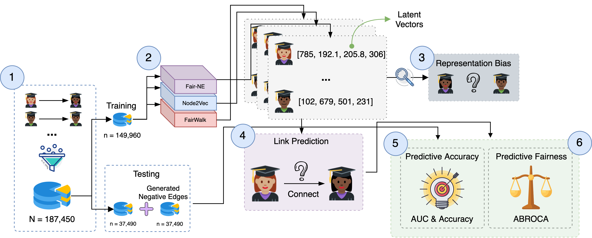
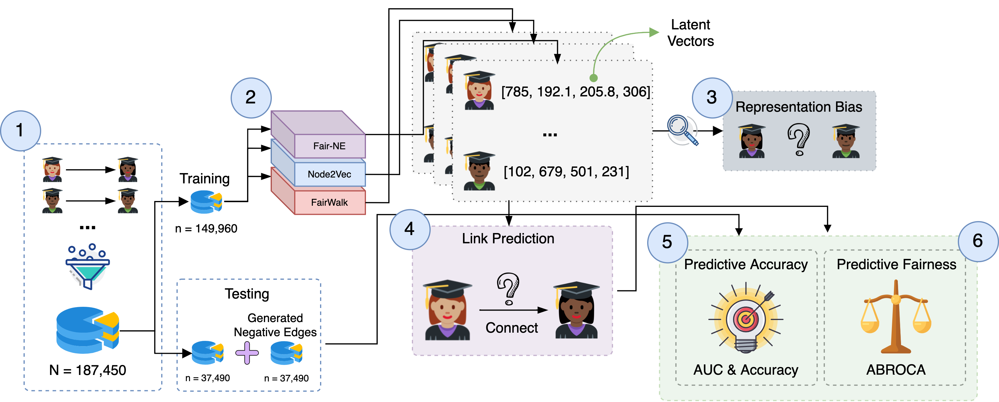

Outline
- Background
- Course Progress
- Research Experience & Interests
- Proposed Timeline
Outline
-
Background
- Education
- Profession
- Course Progress
- Research Experience & Interests
- Proposed Timeline
Outline
-
Background
- Education
- Profession
- Course Progress
-
Research Experience & Interests
-
Fair
Learning Analytics with Big Data and AI
- Technology-enhanced Environments for STEM Education
-
- Proposed Timeline
Background
Background
-
Education
- Business Vietnamese & Finance 😁
- (Not really) Master of Data Science 😂
Background
-
Education
- Business Vietnamese & Finance 😁
- (Not really) Master of Data Science 😂
-
Profession
- 6 years+ programming experience 💻
- Led both educational & commercial web applications developmet ❤️
- Hope to find a career in academia 👨🏼🏫
Course Progress
Course Progress
- Foundational Courses ✅
-
Research Methods
- Maths Stats ✅
- Bayesian Statistical Methods ✅
- Regression Analysis ✅
- Design & Analysis of Experiments ✅
- Time Series Analysis ✅
- Intro to Qualitative Research ✅
- ...
- Doctoral Seminar ✅
Research Experience
Research Experience
Fair LA Background
-
So...what can we do?
- Pre-processing
- In-processing
- Post-processing
Image extracted from https://www.tensorflow.org/responsible_ai
Research Experience: Fair LA
Project 1: Fair Prediction

Li, C., Xing, W., & Leite, W. (2021). Yet Another Predictive Model? Fair Predictions of Students’Learning Outcomes in an Online Math Learning Platform. In Proceedings of the 11th International Conference on Learning Analytics and Knowledge - LAK’21. https://doi.org/10.1145/3448139.3448200.
Li, C., Xing, W., & Leite, W. (minor revision). Using Fair AI to Predict Students’ Math Learning Outcomes in an Online Platform. Interactive Learning Environments.
Research Experience: Fair LA
Project 2: Fair Peer Recommender
 

Li, C., Xing, W., & Leite, W. (2022, accepted). Do Gender and Race Matter? Supporting Help-Seeking with Fair Peer Recommenders in an Online Algebra Learning Platform. In Proceedings of the 12th International Conference on Learning Analytics and Knowledge - LAK’22.
Li, C., Xing, W., & Leite, W. (under review). Toward building a fair peer recommender to support help-seeking in online learning. Distance Education.
Research Experience: Fair LA
Project 3: Factors influencing students' perceived fairness
Li, C. & Xing, W. (manuscript writing). Does Algorithmic Fairness Matter? Reavling Factors Influencing Students' Perceived Fairness.
Research Exp: Technology-enhanced STEM Ed
Background
Research Exp: Technology-enhanced STEM Ed
Project 4: AI-Based & Responsible Conversational Agents
Li, C. & Xing, W. (2021). Natural Language Generation Using Deep Learning to Support MOOC Learners. International Journal of Artificial Intelligence in Education, 31, 186-214. https://doi.org/10.1007/s40593-020-00235-x.
Li, C. & Xing, W. (manuscript writing). Building Socially Responsible Conversational Agents Using Big Data to Support Online Algebra Learning.
Research Exp: Technology-enhanced STEM Ed
Project 4: AI-Based & Responsible Conversational Agents
Li, C. & Xing, W. (2021). Natural Language Generation Using Deep Learning to Support MOOC Learners. International Journal of Artificial Intelligence in Education, 31, 186-214. https://doi.org/10.1007/s40593-020-00235-x.
Li, C. & Xing, W. (manuscript writing). Building Socially Responsible Conversational Agents Using Big Data to Support Online Algebra Learning.
Research Exp: Technology-enhanced STEM Ed
Design & Development Example: Telelab
Research Interest Key Words
- Fair Learning Analytics
- Artificial Intelligence
- Big Data
- Conversational Agents
Proposed Timeline
- Jan, 2022: Qualification Exam
- Spring/Summer, 2022: Prospectus
- Fall, 2022: Proposal defense